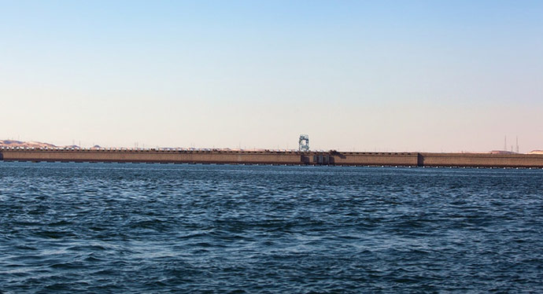
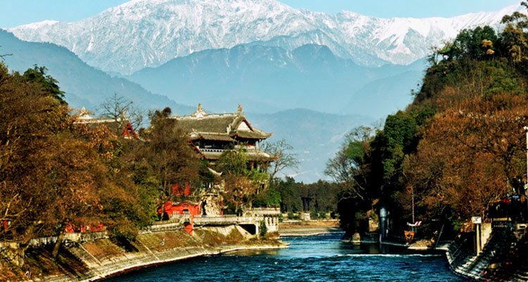

世界反水坝日
以前我们听神话故事传说的时候，讲到大禹治水，里面有段话，讲的是禹传说在帝尧时期，黄河流域经常发生洪水。为了制止洪水泛滥，保护农业生产，尧帝曾召集部落首领会议，征求治水能手来平息水害。鲧被推荐来负责这项工作。鲧接受任务后，采用堤工障水，作三仞之城，就是用简单的堤埂把居住区围护起来以障洪水，九年而不得成功，其实这里鲧的建树已经有了一些水坝的雏形。
而战国时期都江堰的创建，对生态环境影响极小可是对人们生活的改善确实无穷的，从战国时期一直到现在，都江堰都是造福着人们的一项伟大工程。
【水坝真的百益无一害么？】
水坝作为人类开发的一个重要水利项目，在发电、航运、防洪、旅游等方面发挥了极为重要的作用。但是，一些河流生态专家认为，水坝的修建加上河流的改道，会使流域内的动植物的栖息地有所改变，特别是生物链的正常传递遭到障碍甚至破坏，因而会使一些物种受到危害甚至灭绝。其中世界上最着名的例子就是非洲埃及的阿斯旺水坝的建设。大坝建成后，尼罗河的泛滥虽然受到抑制，引起河口渔场质量退化，渔业捕获量大幅度降低，据统计鱼类品种下降低了2/3，同时也造成地中海地区沙丁鱼的捕获量下降了80%。另外，肥沃的河泥被挡在了水库里，也造成了沿岸土壤肥力下降和土地盐碱化的严重后果。
【反水坝日的由来】
从1997年开始，世界水坝委员会就已经把每年的3月14日定为世界反水坝日，旨在拆除那些对人类效益不高反而对自然生态环境极为不利的水坝。

1、肥沃的河泥被挡在了水库里，也造成了沿岸土壤肥力下降和土地盐碱化，水坝带来的不仅仅只有好处呀；
2、保护生态环境是每一个人的责任，只有爱护好我们的地球我们才能更好地生存！
编辑/Vanna